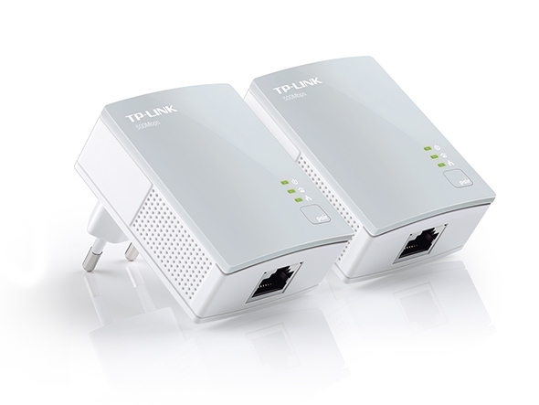

Urządzenia sieciowe
- to sprzęt niezbędny, bądź przydatny do sprawnego zarządzania sieciami komputerowymi.
Najistotniejsze to:
Karta sieciowa
Każdy komputer, który ma pracować w sieci, musi mieć zainstalowany adapter umożliwiający fizyczne
przyłączenie okablowania sieciowego lub odbiór danych radiowych. Najczęściej przyjmuje on postać karty
rozszerzeń montowanej w gnieździe magistrali PCI, PCI-Express lub też zewnętrznego adaptera USB. Każda
karta sieciowa posiada unikatowy adres sprzętowy MAC wykorzystywany do identyfikowania komputera w sieci.
Adres MAC składa się z 48 bitów i zapisywany jest szesnastkowo. Pierwsze 24 bity oznaczają producenta, pozostałe
24 są unikatowe dla danego egzemplarza karty.
Router
to urządzenie, które służy do łączenia sieci komputerowych, na przykład sieci Internet z domową siecią
lokalną. Za pomocą wbudowanych mechanizmów (np. NAT) ruter kieruje ruchem pakietów w sieci - wyznacza
dla nich odpowiednią trasę. To właśnie od procesu trasowania (ang. routing) wzięła się nazwa urządzenia.
Przełącznik
(ang. switch) urządzenie centralne służące do realizacji połączeń między komputerami w sieciach Ethernet
opartych na topologii gwiazdy. Przełącznik przechowuje w wewnętrznej pamięci numery MAC interfejsów
sieciowych, które są skojarzone z portami RJ-45 do których podłączone są komputery. Dzięki sprawdzeniu
adresu każdej ramki danych switch przesyła pakiety tylko do właściwego komputera.
Punkt dostępowy
(ang. access point) urządzenie zapewniające bezprzewodowy dostęp do zasobów sieci za pomocą WiFi.
Most
(ang. bridge) działa w sposób odwrotny do punktu dostępowego - dzięki niemu sygnał sieci bezprzewodowej
możemy zamienić na połączenie kablowe (bo jest potrzebne np. do telewizora z DLNA czy konsoli).
Koncentrator (hub)
dziś już nie stosowane urządzenie sieciowe służące do realizacji połączeń między komputerami w sieciach
Ethernet opartych na topologii gwiazdy. Pośrednicząc w połączeniu, rozsyła zapytania do wszystkich
komputerów uruchomionych w sieci. Dane trafiają do każdego aktywnego węzła, jednak odpowiada tylko ta
maszyna, dla której przeznaczone są dane pakiety, pozostałe ignorują cudze pakiety.
Adaptery PowerLine

pozwalają przesyłać sygnał sieci poprzez istniejącą np. w mieszkaniu instalację elektryczną. Potrzebne są dwa
adaptery, najlepiej w standardzie HomePlug AV.
Ekspander zasięgu Wi-Fi (repeater Wi-Fi)
wzmacniacz sygnału Wi-Fi, który jest tłumiony przez ściany działowe i stropy budynku. Ekspander to specjalny
punkt dostępowy zamontowany w miejscu, gdzie macierzysta sieć Wi-Fi jeszcze jest dostępna. Stworzona
za pomocą ekspandera sieć jest bliźniacza do już istniejącej, czyli obowiązują w niej te same nazwy
ustawienia i zabezpieczenia.